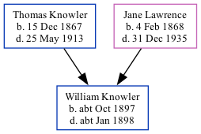

William John Knowler cOct 1897 - c1898 [ Home ] | [ Calendar ] | [ Surnames Index ] | [ Family History ]The child of Thomas Knowler (an agricultural laborer) and Jane Lawrence , William Knowler , the first cousin twice-removed on the mother's side of Nigel Horne , was born in Eastry, Kent, England c. Oct 18971,2,3 and baptized in Staple, Kent, England on Oct 31, 1897.
He died c. Jan 1898 in Staple3,4 and was buried there on Jan 21, 18985 .
Parents Thomas William was born on Dec 15, 1867Jane was born on Feb 4, 1868Citations England & Wales births 1837-2006 - Findmypast England & Wales, FreeBMD Birth Index, 1837-1915 Online publication - Provo, UT, USA: The Generations Network, Inc., 2006.Original data - General Register Office. England and Wales Civil Registration Indexes. London, England: General Register Office. © Crown copyright. Published by permission of the Cont England & Wales, FreeBMD Death Index: 1837-1915 Online publication - Provo, UT, USA: The Generations Network, Inc., 2006.Original data - General Register Office. England and Wales Civil Registration Indexes. London, England: General Register Office. © Crown copyright. Published by permission of the Cont England & Wales deaths 1837-2007 - Findmypast England Deaths & Burials 1538-1991 - Findmypast Media England & Wales births 1837-2006 - BMD/B/1897/4/AZ/000338/049 England & Wales deaths 1837-2007 - BMD/D/1898/1/AZ/000234/215 England Births & Baptisms 1538-1975 - R_884697335 England Deaths & Burials 1538-1991 - R_276621311 Family Tree Map
Generated by Ged2Site . Last updated on Jul 20, 2025